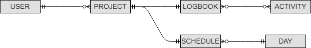

Logy
Document de conception
1. Matériel hardware
Ce projet est réalisé sur diverses machines : les PC du CPNV ainsi que nos ordinateurs personnels.
Spécifications
| PC CPNV | - Windows 10 Education, 64 bits - 16 Go RAM - Intel Core i7-6700 3.40 GHz |
| PC personnel 1 | - Windows 10, 64 bits - 16 Go RAM, - AMD Ryzen 7 1800x |
| MAC CPNV |
2. Logiciels et librairies
Pour la réalisation de cet application nous utilisons les outils/logiciels et librairies suivantes.
Outils/Logiciels
- Visual Studio 2017 - Programmation
- Atom - Éditeur de text pour la documentation
- Visio 2016 - Pour les différents diagrammes
- MkDocs - Outils pour générer une documention HTML à partir de markdown
- MySQL - Base de donnée utilisée
- MySQL Workbench - Création de MLD et exportation en script SQL
Librairies/Framework
- Xamarin - Permet la réalisation d'applications mobiles
- Realms - Système de base de donnée comme SQLite optimisé pour Xamarin
3. Base de données
MCD et MLD de la base de données.
MCD

3.2 MLD

4. Diagramme UML de classes
Le diagramme UML de l'application, représentant toutes ses classes et leurs relations.